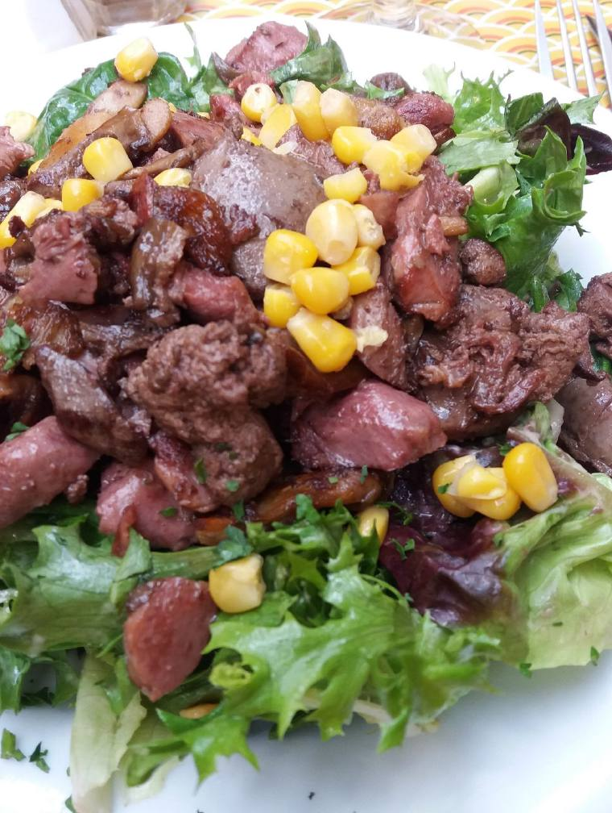

Entrées

Entrées
Salade de gésiers
À la périgourdine
Préparation : 15 min
Cuisson : 10 min
Ingrédients (pour 4 personnes)
- 200 g de gésiers confits
- 100 g de magret fumé en tranches
- 100 g de mâche
- 4 tranches de pain de campagne
- 1 tomate
- 1 échalote
- 50 g de cerneaux de noix
- 2 cuillères à soupe d’huile de noix
- 1 cuillère à soupe de vinaigre balsamique
- 50 g de foie gras (facultatif)
- sel, poivre
Quantités adaptées. Les temps de cuisson ne sont pas recalculés.
- Dorer le pain en cubes à la poêle avec un peu d’huile.
- Réchauffer doucement les gésiers, les trancher.
- Mélanger mâche, tomate en quartiers et échalote, assaisonner d’huile de noix et de vinaigre.
- Ajouter gésiers chauds, magret, noix, croûtons et foie gras. Servir aussitôt.
D’après la salade périgourdine de LaNutrition.fr. Texte reformulé, poids des noix précisé.